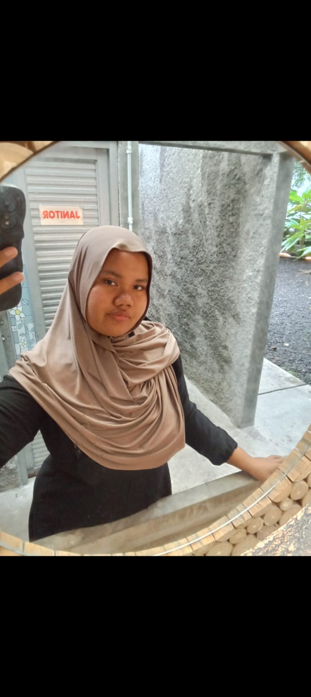

Web Developer | Game Developer | Programmer
Saya adalah seorang siswa Rekayasa Perangkat Lunak (RPL) yang memiliki minat dalam pengembangan website, pemrograman Java, Laravel, serta pembuatan game 2D menggunakan Phaser Framework. Saya senang mempelajari teknologi baru dan terus mengembangkan kemampuan di bidang software development.
📧 Email : soloherlina65@gmail.com
📍 Jl. Pajajaran Sumber No. 2, Kec. Banjarsari, Kota Surakarta, Jawa Tengah